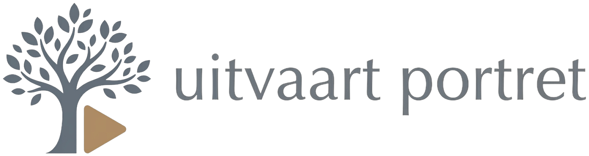

Ik ben Daan Lubbers, creatief professional uit Amsterdam. Sinds 2016 breng ik verhalen tot leven als videomonteur, onder meer voor het productiehuis van John van den Heuvel en voor Talpa Network.
Mijn eerste afscheidsfilm maakte ik voor een dierbare vriendin die veel te jong overleed. Het samenbrengen van beelden en herinneringen bood haar omgeving een klein beetje troost. Dat moment is me altijd bijgebleven.
Naast mijn werk voor televisie, de zorg en online content maak ik daarom films voor uitvaarten. Een montage maken die troost biedt en een leven eert, raakt me, omdat het er écht toe doet.
Daan LubbersUw foto’s zijn persoonlijk. Ik ga er met dezelfde zorg mee om als met mijn eigen herinneringen.
Binnen 12 uur staat de film klaar, zodat u er in een drukke week niet op hoeft te wachten.
U spreekt steeds met mij. Van het eerste gesprek tot de laatste aanpassing.
“Fijn, fijn, fijn - precies zoals ik het wilde hebben. Fantastisch! Mijn moeder komt zo zeer goed uit de verf - ten voeten uit! Voortreffelijk en dank voor het snelle werken.”
“Daan, dank-dank-dank! Het was gisteren zo’n prachtig en eervol afscheid…veel mensen die mama niet of niet goed kenden kwamen naar ons toe met de opmerking dat ze mede door de filmpjes een heel goed beeld van mn moeder hadden gekregen! Heel erg bedankt, nogmaals!”
Bel of app Daan. U spreekt direct met degene die uw film maakt.